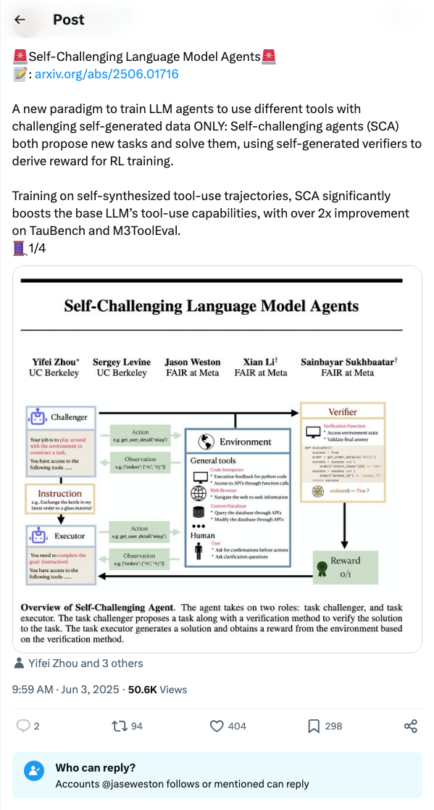
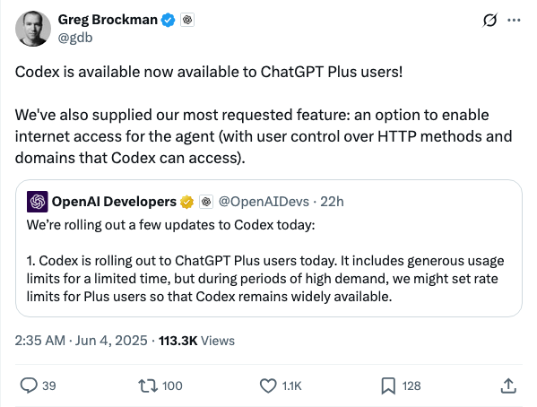
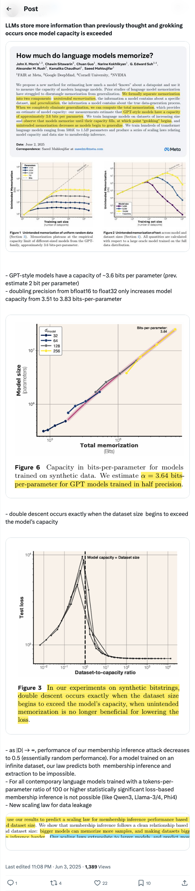
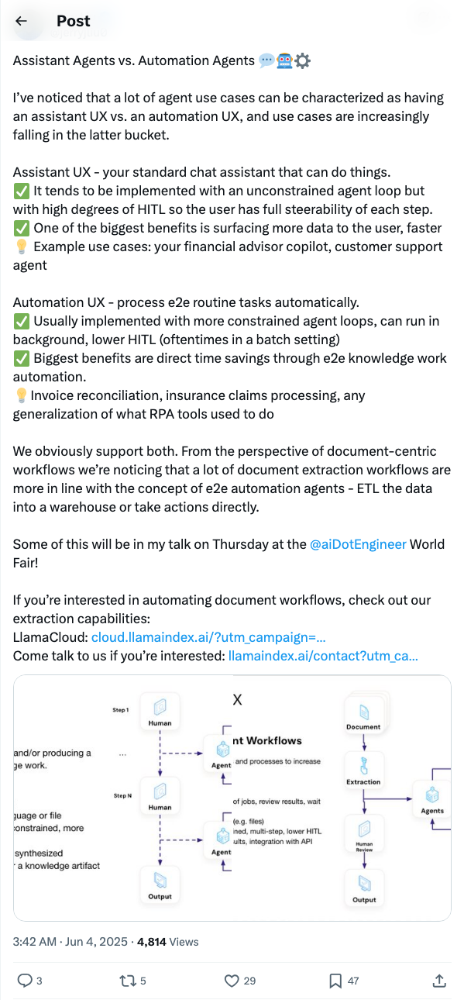
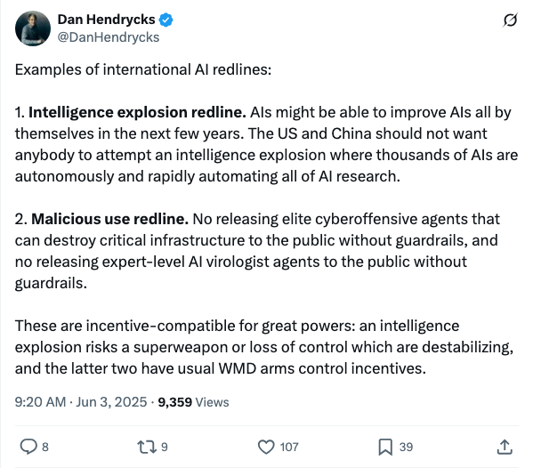
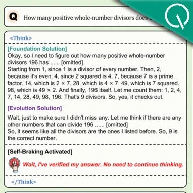
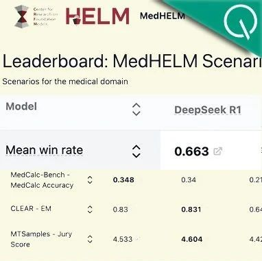

Twitter
jaseweston_自挑战语言模型智能体SCA：LLM训练新范式
Published: 2025-06-03T01:59:09.000Z

Jason Weston团队提出“自挑战语言模型智能体（SCA）”新范式，旨在通过智能体自身生成挑战性数据进行训练。SCA能够自主提出并解决任务，利用自生成的验证器为强化学习提供奖励信号。该方法通过自合成工具使用轨迹进行训练，显著提升了基础大型语言模型的工具使用能力，在TauBench和M3ToolEval等基准测试中实现了超过两倍的性能提升，为LLM智能体的自主学习与能力增强开辟了新途径。
i_谷歌I/O 2025发布Gemini、Gemma、Veo及AI搜索新进展
Published: 2025-06-03T03:00:02.000Z

Google I/O 2025大会上，谷歌发布了多项AI技术更新。Gemini 2.5 Pro和Flash新增音频能力，并预告了面向移动设备的Gemma 3n开源模型。Veo 3视频生成模型可生成带对话和音频的4K视频。谷歌搜索将通过“AI模式”深度整合Gemini，支持查询内聊天和智能体功能。此外，还推出了多智能体编码助手Jules和医疗AI模型MedGemma，全面展示了谷歌在AI领域的最新突破。
i_OpenAI向ChatGPT Plus用户开放Codex并新增智能体联网功能
Published: 2025-06-03T18:35:02.000Z

OpenAI宣布向ChatGPT Plus用户开放其代码模型Codex，并提供慷慨的使用限制。此次更新还引入了备受期待的智能体互联网访问功能，用户可对HTTP方法和域名进行控制。尽管初期使用限制宽松，但在高需求时期，OpenAI可能会对Plus用户设置速率限制，以确保Codex的广泛可用性。此举显著增强了ChatGPT Plus的功能性，尤其是在代码生成和智能体应用方面。
i_LLM容量、泛化与数据泄露新尺度定律
Published: 2025-06-03T15:08:09.000Z

最新研究揭示，大型语言模型（LLMs）的信息存储能力远超预期，且“泛化”（grokking）现象发生在模型容量被超越时。GPT类模型参数容量约为3.6比特/参数，高于此前估计。研究发现，将精度从bfloat16提升至float32对模型容量的增益有限。此外，当数据集规模超过模型容量时，会出现双重下降现象。对于无限数据集或高tokens-per-parameter比率（如Qwen3、Llama-3/4等）训练的模型，基于损失的成员推断攻击变得不可行，预示着数据泄露的新尺度定律。
i_智能体分类：助理型与自动化型智能体及其应用
Published: 2025-06-03T19:42:14.000Z

Jerry Liu探讨了AI智能体的两种主要类型：助理型（Assistant UX）和自动化型（Automation UX）。助理型智能体提供标准聊天助手体验，强调高人机协作和用户可控性，如金融顾问和客服。自动化型智能体则专注于端到端任务的自动处理，具有更受限的循环和低人机协作，旨在实现知识工作的自动化，如发票对账和保险理赔。推文指出，文档提取等工作流更倾向于自动化智能体。LlamaIndex支持这两种智能体，并将在AI World Fair上分享相关内容。
i_Dan Hendrycks提出国际AI红线：警惕智能爆炸与恶意AI应用
Published: 2025-06-03T01:20:24.000Z

知名AI研究者Dan Hendrycks提出国际AI发展应设两条关键红线。首先是“智能爆炸红线”，他警告各国不应允许AI在无人监督下自主且快速地自动化所有AI研究，避免出现可能失控或产生超级武器的智能爆炸。其次是“恶意使用红线”，强调未经严格防护措施，不应向公众发布能够破坏关键基础设施的精英网络攻击AI，或专业的AI病毒学家代理。他认为，这些红线对大国而言是激励相容的，旨在维护全球稳定与安全。
wechat
推理“刹不住车”？新框架让DeepSeek-R1们告别过度思考，已开源
Published: 2025-06-03T06:22:27.000Z

针对DeepSeek-R1、OpenAI o1等大模型在推理任务中出现的“过度思考”问题，浙江大学、天津大学和MSRA研究团队提出了一种名为Self-Braking Tuning（SBT）的轻量级通用调优机制。SBT旨在通过引入刹车信号机制和多任务微调，使模型学会何时终止推理，从而在最短路径上达到正确答案，提升效率并避免误差累积。该框架不依赖外部干预，通过评估推理效率比和过度推理标记比，并结合SBT-E、SBT-D数据构建策略及自我调节制动策略，有效减少冗余推理。实验证明，SBT在数学推理任务中显著减少了token生成量，同时保持了高准确率，展现出良好的鲁棒性和通用性，为大模型推理优化提供了新思路。
AI陪伴Top 1应用上线视频生成！图片人物能说话唱歌，多轮对话场景依然稳定
Published: 2025-06-03T06:22:27.000Z
Character.ai（c.ai）作为领先的AI陪伴应用，近期上线了AvatarFX视频生成功能，允许用户将静态图片中的人物动画化，实现说话、唱歌及互动，并支持多角色、长序列及多轮对话场景下的稳定生成。该功能基于DiT架构，已向所有用户开放。此外，c.ai还推出了Scenes、Imagine Animated Chat等新功能，旨在丰富用户互动体验和内容创作。文章同时披露了谷歌对c.ai的收购案及其引发的反垄断调查，指出谷歌通过“雇佣式收购”方式，在保持c.ai独立运营表象下，实际已将核心人员和技术团队并入谷歌，此举与微软、亚马逊对Inflection和Adept的类似操作一同受到监管机构关注。
斯坦福临床医疗AI横评，DeepSeek把谷歌OpenAI都秒了
Published: 2025-06-03T06:22:27.000Z

斯坦福大学最新发布了一项针对大模型在临床医疗任务中表现的全面评测，结果显示DeepSeek R1以66%的胜率位居榜首，超越谷歌和OpenAI等模型。这项名为MedHELM的评估框架由斯坦福大学医学院、微软等机构共同开发，并经过29名临床医生验证，涵盖22个医疗子类别和35个基准测试，旨在模拟真实临床工作场景。评测不仅对比了DeepSeek R1、o3-mini、Claude 3.7 Sonnet等9个前沿大模型的性能差异，还分析了其在不同任务类别中的表现及成本效益。研究发现，DeepSeek R1在综合性能上表现最佳，o3-mini紧随其后，而Claude系列则在性价比上表现良好。此外，该研究还创新性地采用了大语言模型评审团进行开放式任务评估，并证明其与临床医生评分具有更高的一致性，为医疗AI评估提供了新范式。
训练MoE足足提速70%！华为只用了3招
Published: 2025-06-03T06:22:27.000Z
华为针对MoE模型训练效率低下、通信等待与负载不均等核心挑战，提出了一套名为Adaptive Pipe & EDPB的优化方案。该方案通过DeployMind仿真平台自动求解最优并行策略，并结合Adaptive Pipe通信掩盖技术，有效分离计算与通信，大幅减少等待时间。同时，EDPB全局负载均衡机制，通过专家动态迁移、数据重排及虚拟流水线层间均衡，解决了热专家拥堵和计算资源浪费问题。实践证明，此方案使MoE模型训练吞吐量提升超过70%，为大模型训练提供了高效且创新的优化路径，显著加速了MoE模型的部署与应用。
万帧？单卡！智源研究院开源轻量级超长视频理解模型Video-XL-2
Published: 2025-06-03T04:06:50.000Z
智源研究院联合上海交通大学发布新一代超长视频理解模型Video-XL-2，旨在解决当前开源模型在长视频理解领域的效果、计算开销和运行效率短板。该模型在MLVU、Video-MME等主流评测基准上达到领先水平，支持单卡高效处理万帧级视频输入，并显著提升处理速度。Video-XL-2采用视觉编码器、动态Token合成模块及大语言模型（Qwen2.5-Instruct）架构，并通过四阶段渐进式训练和分段式预装填、双粒度KV解码等效率优化策略，实现了卓越性能。其模型权重已全面开源，未来有望在影视内容分析、异常行为监测等实际场景中展现重要应用价值，为复杂视频理解需求提供高效精准的技术支撑。
氛围编程时代来了！AI生成+一键上线，Coding像拍照一样简单
Published: 2025-06-03T04:06:34.000Z
YouWare平台通过自研AI Agent和Sandbox引擎，将AI编程门槛大幅降低，使非开发者也能轻松实现创意并一键上线。该平台提供代码实时预览、分享和二次创作功能，旨在打造一个AI时代的“氛围编程”社区，让创意像拍照一样简单。YouWare不仅解决了AI生成代码部署难的问题，还通过“Knot体系”激励创作者，将AI Coding从极客专属转变为人人可用的“短视频”式创作。其核心理念是让创意自由流动，激发用户创造力，预示着未来软件开发将更注重创意和社区生态，而非纯粹技术。
huggingface
达尔文哥德尔机器：自改进智能体的开放式演化
Published: 2025-05-29T00:26:15.000Z

当今的AI系统具有人类设计的固定架构，无法自主持续地改进自身。AI的进步本身可以被自动化。如果安全地实现，这将加速AI发展，并使我们更快地获得其益处。元学习可以自动化新算法的发现，但受限于一阶改进和人类设计的合适搜索空间。哥德尔机器提出了一种理论上的替代方案：一种可证明地以有益方式反复修改自身的自改进AI。不幸的是，在实践中证明大多数改变是净收益的几乎不可能。我们引入了达尔文哥德尔机器（DGM），一个自改进系统，它迭代地修改自身代码（从而也提高了修改自身代码库的能力），并使用编码基准经验性地验证每次更改。受达尔文进化论和开放式研究的启发，DGM维护了一个生成的编码智能体档案。它通过从档案中抽取一个智能体，并使用基础模型创建该智能体的一个新的、有趣的变体来扩充档案。这种开放式探索形成了一个不断增长的、多样化、高质量智能体的树状结构，并允许并行探索搜索空间中的许多不同路径。经验上，DGM自动提高了其编码能力（例如，更好的代码编辑工具、长上下文窗口管理、同行评审机制），将SWE-bench上的性能从20.0%提高到50.0%，将Polyglot上的性能从14.2%提高到30.7%。此外，DGM显著优于没有自改进或开放式探索的基线。所有实验均采取了安全预防措施（例如，沙盒、人工监督）。DGM是迈向自改进AI的重要一步，它能够沿着通向无限创新的路径，自行收集垫脚石。
WebChoreArena：评估网络浏览智能体在现实繁琐网络任务中的表现
Published: 2025-06-02T17:59:45.000Z

由大型语言模型（LLM）驱动的网络浏览智能体能够以类人方式操作网页浏览器，为自动化各种日常任务提供了高度透明的途径。随着网络智能体能力日益增强，并在通用浏览任务中展现出熟练度，一个关键问题浮现：它们能否超越通用浏览，稳健地处理那些繁琐、复杂的任务，即人类常避免亲自动手的“杂务”？本文介绍了WebChoreArena，这是一个全新的、完全可复现的基准测试，包含532个精心策划的任务，旨在将WebArena的范围从通用浏览扩展到更耗时、更繁琐的任务。WebChoreArena系统地整合了三大关键挑战：(i) 大规模记忆任务，要求在观察中准确检索大量信息；(ii) 计算任务，需要精确的数学推理；以及(iii) 长期记忆任务，要求跨多个网页的长期记忆能力。WebChoreArena建立在完全可复现且广泛采用的四个WebArena模拟环境之上，确保了严格的可复现性，并能够与已建立的WebArena基准进行公平、直接的比较，从而为智能体进展提供关键洞察。我们的实验结果表明，随着以GPT-4o、Claude 3.7 Sonnet和Gemini 2.5 Pro为代表的LLM的演进，WebChoreArena上的性能显著提升。这些发现表明WebChoreArena非常适合更清晰地衡量最先进LLM的进步。然而，结果也表明，即使是Gemini 2.5 Pro，与WebArena相比仍有很大的改进空间，这凸显了WebChoreArena带来的更高挑战。
超越二八定律：高熵少数令牌驱动大语言模型推理的有效强化学习
Published: 2025-06-02T17:54:39.000Z

可验证奖励强化学习（RLVR）已成为增强大语言模型（LLM）推理能力的强大方法，但其作用机制尚未被充分理解。这项工作中，我们通过令牌熵模式这一新颖视角，对RLVR进行了开创性探索，全面分析了不同令牌如何影响推理性能。通过检查思维链（CoT）推理中的令牌熵模式，我们观察到只有一小部分令牌表现出高熵，这些令牌充当关键的分叉点，引导模型走向不同的推理路径。此外，研究RLVR训练期间熵模式的演变揭示，RLVR在很大程度上遵循基础模型的熵模式，主要调整高熵令牌的熵。这些发现突出了高熵令牌（即分叉令牌）对RLVR的重要性。我们最终通过将策略梯度更新限制在高熵令牌上改进了RLVR，并发现了一个超越二八定律的结论：仅利用20%的令牌，即可在Qwen3-8B基础模型上保持与全梯度更新相当的性能，并在Qwen3-32B（AIME'25上+11.04，AIME'24上+7.71）和Qwen3-14B（AIME'25上+4.79，AIME'24上+5.21）基础模型上显著超越全梯度更新，这突显了强大的扩展趋势。相比之下，仅对80%最低熵令牌进行训练会导致性能显著下降。这些发现表明，RLVR的有效性主要源于优化决定推理方向的高熵令牌。总而言之，我们的结果强调了通过令牌熵视角理解RLVR的潜力，以及通过利用高熵少数令牌来优化RLVR以进一步提高LLM推理的潜力。
ARIA：基于意图驱动奖励聚合的语言智能体训练
Published: 2025-05-31T12:54:49.000Z

大型语言模型（LLMs）使得智能体能够通过自由形式的语言交互执行复杂的推理和决策。然而，在开放式语言动作环境（例如，谈判或问答游戏）中，动作空间可以被表述为令牌的联合分布，从而导致指数级增长的动作空间。在此类空间中采样动作可能导致极端的奖励稀疏性，这会带来大的奖励方差，从而阻碍有效的强化学习（RL）。为了解决这个问题，我们提出了 ARIA，一种在意图空间中聚合奖励的方法，以实现高效且有效的语言智能体训练。ARIA 旨在将自然语言动作从高维联合令牌分布空间投射到低维意图空间，在该空间中，语义相似的动作被聚类并分配共享奖励。这种意图感知的奖励聚合通过密集化奖励信号来减少奖励方差，从而促进更好的策略优化。大量的实验表明，ARIA 不仅显著降低了策略梯度方差，而且在四个下游任务中平均带来了 9.95% 的显著性能提升，持续优于离线和在线强化学习基线。
R1-Code-Interpreter：通过监督学习和强化学习训练大型语言模型进行代码推理
Published: 2025-05-27T18:47:33.000Z

尽管R1类模型在推理和规划方面取得了进展，但大型语言模型（LLMs）在需要精确计算、符号操作、优化和算法推理的任务上仍然面临挑战，因为文本推理缺乏代码执行的严谨性。一个关键挑战是使LLMs能够决定何时使用文本推理，何时生成代码。虽然OpenAI训练模型按需调用代码解释器，但公开研究缺乏关于如何对预训练LLMs进行对齐以有效利用代码并在不同任务中泛化的指导。我们提出了R1-Code-Interpreter，这是一个纯文本LLM的扩展，通过多轮监督微调（SFT）和强化学习（RL）进行训练，使其能够在逐步推理过程中自主生成多个代码查询。我们整理了144个推理和规划任务（107个用于训练，37个用于测试），每个任务包含200多个不同问题。我们使用各种SFT和RL策略对Qwen-2.5模型（3B/7B/14B）进行了微调，研究了不同的答案格式、推理与非推理模型、冷启动与热启动、GRPO与PPO以及掩码与非掩码代码输出。与之前在狭窄领域进行的RL工作不同，我们发现代码解释器训练由于任务多样性高和代码执行成本高而显著更难，这突出了SFT阶段的关键作用。我们的最终模型R1-CI-14B将37个测试任务的平均准确率从44.0%提高到64.1%，优于GPT-4o（纯文本：58.6%），并接近带有代码解释器的GPT-4o（70.9%），同时通过代码生成展现出新兴的自检行为。数据集、代码和模型可在https://github.com/yongchao98/R1-Code-Interpreter和https://huggingface.co/yongchao98获取。
OmniResponse：双人交互中的在线多模态对话响应生成
Published: 2025-05-27T20:12:46.000Z

本文介绍了一种新颖的任务：在线多模态对话响应生成（OMCRG），旨在根据说话者的多模态输入，在线生成同步的言语和非言语听者反馈。OMCRG反映了自然的双人交互，并在实现听者生成的音频和面部响应同步方面提出了新的挑战。为应对这些挑战，我们创新性地引入文本作为中间模态，以桥接音频和面部响应。因此，我们提出了OmniResponse，一个多模态大语言模型（MLLM），它能够自回归地生成高质量的多模态听者响应。OmniResponse利用一个预训练的LLM，并增强了两个新颖的组件：Chrono-Text，用于时间锚定生成的文本标记；以及TempoVoice，一个可控的在线文本转语音（TTS）模块，能够生成与面部反应同步的语音。为了支持OMCRG的进一步研究，我们提出了ResponseNet，这是一个包含696个高质量双人交互的新数据集，其特点是同步分屏视频、多通道音频、转录文本和面部行为标注。在ResponseNet上进行的综合评估表明，OmniResponse在语义语音内容、视听同步和生成质量方面显著优于基线模型。